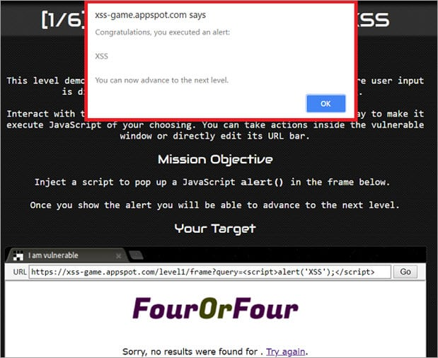

| Data Lifecycle | Infrastructure | Emergent Issues |
|---|---|---|
| Sensitive Info Disclosure | Supply Chain Vulns | Prompt Injection |
| Data/Model Poisoning | Unbounded Consumption | Improper Output Handling |
| Model Theft | Excessive Agency | |
| Hallucination |
AI is leaky!
AI Infrastructure is non-trivial
People don't know how to use AI
Output from LLMs must be sanitized
AI may hallucinate or take wrong actions